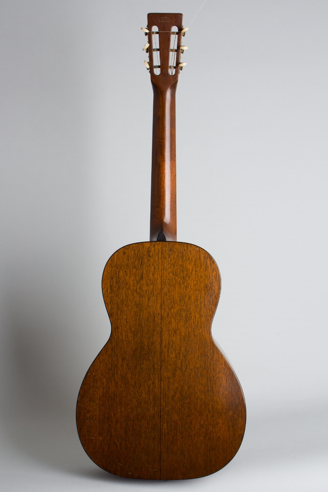
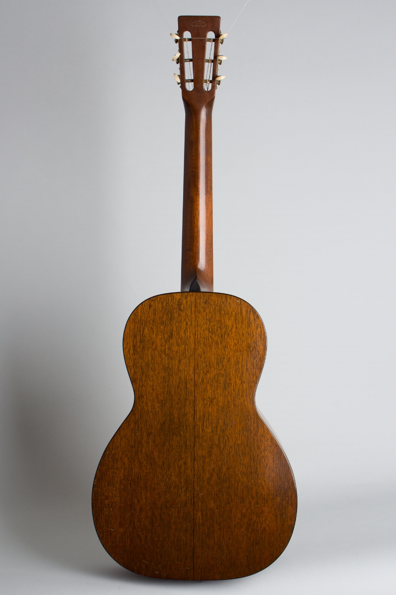

120€ (Prix négociable)
La Mancha Rubi CM/53
Bruxelles Forest
Trés bon état
Nicolas Premont
1 avis
Résumé
- Guitare : électrique
- Marque : Harley Benton
- Couleur : Noir
- Etat : Neuf
Description
Le vibrato est stable, un "Black Box" Goldo a été ajouté... Action Basse, quelques traces d'utilisation mais bon état général. Pas d'usure des frettes ni de "buzz". Éventuellement échange contre guitare électrique ou un ampli.